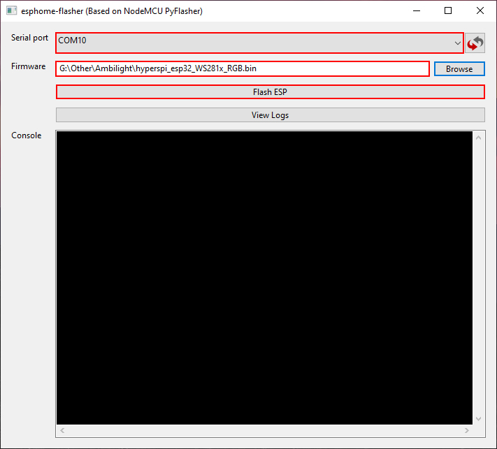
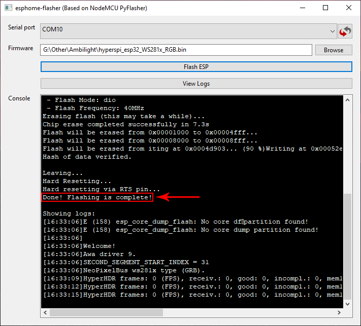

Открываем репозиторий разработчика HyperSPI, нам нужна страница релизных версий
(ссылка).
Скачиваем актуальный драйвер в зависимости от испоьзуемой платы (ESP32 / Esp8266) и типа светодиодной ленты.
Обратите внимание для платы Raspberry Pi Pico RP2040 будет немного другой процесс установки драйвера без
неоходимости загрузки дополнительных программ, процесс описан на данной странице
(ссылка).
В моем случае я использую плату Esp32 и ленту WS2812B, соответственно мне необходимо использовать драйвер:
hyperspi_esp32_WS281x_RGB.bin
Скачиваем самую последнюю доступную версию приложения "ESPHome-Flasher"
(ссылка), запускаем ее.
Подключаем плату Esp32 к компьютеру с помощью MicroUsb кабеля.
В окне программы достаточно выполнить три действия:
- выбрать порт к которому подключена наша плата,
- указать путь до загруженного драйвера (файл *.bin),
- нажать кнопку "Flash ESP".

При успешном завершении процесса прошивки вы увидите следующее сообщение:

На этом данный этап прошивки платы светодиодного драйвера закончен.